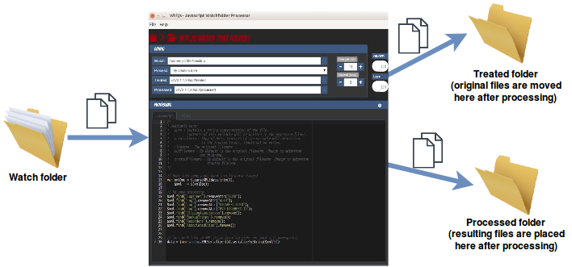

Wtf.js
WtF.js (Watch that Folder) Javascript Watchfolder Processor
WtF.js (Watch that Folder) Javascript Watchfolder Processor
Description
Monitors files in a directory, processes them through some JS or XSLT code and outputs files in the "treated" and "processed" folders.
Features

- Windows / Mac / Linux builds available
- Processes any text file (txt, xml, json, csv...)
- You can control checking frequency and number of files to process per run
- Includes jQuery but other libraries can be added

Download and usage
Please use these links to download and install for your platform:
- Linux TODO
- Windows TODO
- OSX TODO
Development
If you would like to edit the code, fork this repository on github, clone the resulting repository to your machine and edit away.
To start/test:
git clone YOUR-REPO
cd YOUR-REPO
npm install
npm start
If you have problems with npm start try:
./node_modules/gulp/bin/gulp.js build
nw build/ --remote-debugging-port=9222
Credits
Built with ❤ and Javascript by fm.to.it
WtF.js is built on top of NW.js using nw-boilerplate with some modifications.
Licence
The MIT License (MIT)
Copyright (c) 2015 Francesco Merletti - me@fm.to.it - @mjs2020
Permission is hereby granted, free of charge, to any person obtaining a copy of this software and associated documentation files (the "Software"), to deal in the Software without restriction, including without limitation the rights to use, copy, modify, merge, publish, distribute, sublicense, and/or sell copies of the Software, and to permit persons to whom the Software is furnished to do so, subject to the following conditions:
The above copyright notice and this permission notice shall be included in all copies or substantial portions of the Software.
THE SOFTWARE IS PROVIDED "AS IS", WITHOUT WARRANTY OF ANY KIND, EXPRESS OR IMPLIED, INCLUDING BUT NOT LIMITED TO THE WARRANTIES OF MERCHANTABILITY, FITNESS FOR A PARTICULAR PURPOSE AND NONINFRINGEMENT. IN NO EVENT SHALL THE AUTHORS OR COPYRIGHT HOLDERS BE LIABLE FOR ANY CLAIM, DAMAGES OR OTHER LIABILITY, WHETHER IN AN ACTION OF CONTRACT, TORT OR OTHERWISE, ARISING FROM, OUT OF OR IN CONNECTION WITH THE SOFTWARE OR THE USE OR OTHER DEALINGS IN THE SOFTWARE.